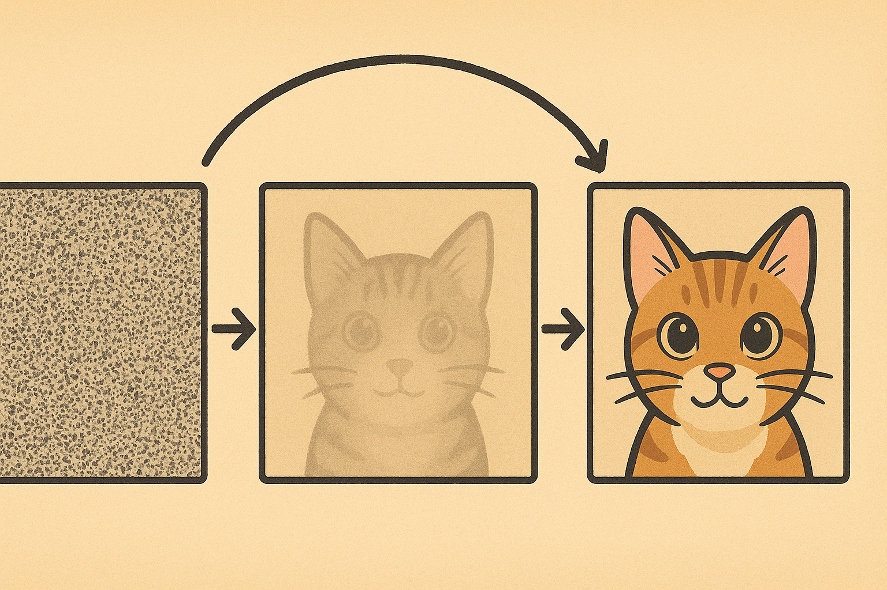

Diffusion : DDIM
Denoising Diffusion Implicit Models
Denoising Diffusion Implicit Models
- Deterministic sampling
Fast sampling
DDPM의 Markovian이었던 forward diffusion process를 non-Markcovian form으로 generalize하고, reverese process는 짧은 Markov chain으로 설계해서 더 빠르게 sampling을 할 수 있도록 했다.
DDPM을 remind해보면 variational lower bound를 maximize하는 방식으로 학습했었고, Gaussian transition을 하는 Markov chain을 생각해 forward process를 formulate했고 이 역과정은 intractable해서 neural network를 사용했었다.
그리고 식을 Reparmeterize해서 $x_t = \sqrt{\bar \alpha_t}x_0 + \sqrt{1-\bar{\alpha_t}}\epsilon$ 로 $x_t$를 $x_0$ 와 noise의 linear combination으로 쓸 수 있었고 objective 또한 noise를 예측하도록 만들었었다.
$$ L_\gamma (\epsilon_{\theta}) = \sum_{t=1}^T \gamma_t \mathbb E_{x_0 \sim q(x_0), \epsilon_t \sim N(0,I) }[||\epsilon_\theta ^{(t)}(\sqrt{\bar \alpha_t}x_0 +\sqrt{1-\bar{\alpha_t}}\epsilon_t)-\epsilon_t||^2_2] $$
이 식의 $\gamma$ =1 일 때였다.( where $\epsilon_\theta = {\epsilon_\theta^{(t)}}^{T}_{t=1}$ , $\gamma = [\gamma _1,\cdots,\gamma _T]$ )
그런 T 가 충분히 커야하고 sequential하게 계속 계산(iterations)을 떄려야하기 때문에 computaitional cost가 매우 높다.
Variational inference for Non-Markovian Forward Processes
결국 우리의 generative model은 reverse 를 approximate을 잘해보자라는 것.
그래서 iteration의 수를 줄이고자하는 의지와 함께 식을 뜯어 고쳐보자. 위의 objective function을 보면 우리가 ddpm에서 reparametrization을 통해 볼 수 있듯 joint distribution $q(x_{1:T}|x_0)$ 가 아니라 $q(x_t|x_0)$에만 직접적인 dependency가 있음을 볼 수 있다. 같은 obejctive를 갖게 하기 위해,⭐⭐ $q(x_t|x_0)$만 만족⭐⭐하면되고 이를 만족하는 joint는 많기에 forward process를 non-Markovian 으로 바꿔보자(혹은 일반화해보자).
- Non-Markovian Forward Processes
inference distribution들을 모아논 Q를 생각해보자. 이를 real vector $\sigma$로 inference distb을 indexing을 해서 forward process를 inference distb로 표현하면
$$ q_\sigma (x_{1:T}|x_0) = q_{\sigma}(x_T|x_0) \Pi {t=2}^T q{\sigma}(x_{t-1}|x_t,x_0) $$
이고 여기서 $q(x_T|x_0) = N(\sqrt{\bar \alpha_T}x_0, (1-\bar{\alpha_T})I)$라하고 t > 1보다 클 때
⭐⭐⭐
Def ) Reverse Conditional Distribution

⭐⭐⭐
로 써서 모든 t에 대해서 $q(x_t|x_0) = N(\sqrt{\bar \alpha_t}x_0, (1-\bar{\alpha_t})I)$를 만족하도록 formulate했다는 것( DDPM과 같도록).
이 forward process를 Bayes rule로 다시 쓰면
$$ q_{\sigma}(x_t|x_{t-1},x_0) = \frac {q_{\sigma}(x_t,x_0)q_\sigma(x_t|x_0)}{q_{\sigma}(x_{t-1}|x_0)} $$
이 식을 보면 $x_t$가 $x_{t-1}$ 뿐만아니라 $x_0$에도 의존하므로 더이상 Markovian이 아니다.
정리하면 DDPM과 DDIM은 forward process에서 $q(x_t|x_0)$ 는 같게 두고 다만 joint distribution을 다르게 가져갔다.

- Generative Process And Unified Variational Inference Objective
Goal $p_\theta (x_{0:T})$
Generation 측면에서 $x_t$→ $x_{t-1}$로 가는 process가 궁금하고, $q_{\sigma}(x_{t-1}|x_t,x_0)$를 이용해 $p_\theta ^t (x_{t-1}|x_t)$를 define해보자
$x_t = \sqrt{\bar \alpha_t}x_0 + \sqrt{1-\bar{\alpha_t}}\epsilon$ 를 이용해 모델이 epsilon noise을 예측해, $x_0$ 를 알 수 있도록 예측하는 f 도입
$$ f_{\theta}^{(t)}(x_t) = (x_t -\sqrt{1-\bar{\alpha_t}}\epsilon_{\theta}^{(t)}(x_t))/\sqrt {\alpha_t} \approx x_0 $$
가 되고 우리 모델은
⭐⭐⭐

⭐⭐⭐
이고 objective $J_\sigma(\epsilon_\theta)$ 는 $\epsilon_{\theta}$의 함수가 된다. 또한 objective가 $\sigma$에 대한 dependency가 있으므로 각 $\sigma$에대해 따로 학습을 해주어야한다. 그런데 $J_\sigma$는 어떤 $\gamma$에대해 $L_\gamma$와 같다고 한다.
$$ \text{Theorem 1)} \forall \sigma>0, there ; exists ; \gamma \in \mathbb R^T_{>0} ; and ; C \in \mathbb R \quad s.t.; J_\sigma = L_\gamma + C $$
여기서 $L_\gamma (\epsilon_{\theta}) = \sum_{t=1}^T \gamma_t \mathbb E_{x_0 \sim q(x_0), \epsilon_t \sim N(0,I) }[||\epsilon_\theta ^{(t)}(\sqrt{\bar \alpha_t}x_0 +\sqrt{1-\bar{\alpha_t}}\epsilon_t)-\epsilon_t||^2_2]$를 다시 보자.
만약 $\epsilon_{\theta}^t$가 서로다른 t 끼리 parameter를 공유하지 않는다면!! , 전체를 maximize하기 위해선 우리는 각 t에 대한 term들을 각각 maximize해야되고 그 얘기는 weight factor $\gamma$와 무관하게 optimization이 진행된다는 것. 그러므로 optimize(objective)관점에서 $\gamma$는 arbitrary하게 잡아도 되고, 이를 1로 잡아도 Ok이다. 그런데 theorem 1에 의하면 어떤 $L_\gamma$ 는 $J_\sigma$와 같은 objective를 갖으므로 $L_1$을 $J_\sigma$ 대신 사용할 수 있다.
Sampling From Generalized Generative Processes
우리는 general한 objective를 $L_1$이 대체가능함을 보였고, 그래서 markovian의 forward process와 non markovian의 forward process 모두의 objective이므로 pretrained DDPM을 사용해도 좋다.
그리고 우리는 $\sigma$에 따른 sampling 에 집중해볼것
- Denoising Diffusion Implicit Models
우리는 위의 $p_\theta$로 $x_t$로부터 $x_{t-1}$을 generate할 수 있게 됐다.
⭐⭐⭐⭐⭐
$$ x_{t-1} = \sqrt{\bar \alpha_{t-1}}(\frac{x_t-\sqrt{1-\bar \alpha_{t}}\epsilon_{\theta}^{(t)}(x_t)}{\sqrt{\bar \alpha_{t}}}) +\sqrt{1-\alpha_{t-1}-\sigma_t^2}\cdot \epsilon_{\theta}^{(t)}(x_t) + \sigma_t\epsilon_t $$
1st term
$(\frac{x_t-\sqrt{1-\bar \alpha_{t}}\epsilon_{\theta}^{(t)}(x_t)}{\sqrt{\bar \alpha_{t}}})$ : predicted $x_0$
2nd term
$\sqrt{1-\alpha_{t-1}-\sigma_t^2}\cdot \epsilon_{\theta}^{(t)}(x_t)$ : direction pointing to $x_t$
3rd term
random noise independent of $x_t$
⭐⭐⭐⭐⭐
여기서 $\sigma_t$를 어떻게 잡느냐에 따라 매우 흥미로운 결과를 볼 수 있다.
case1) $\sigma_t = \sqrt{(1-\bar\alpha_{t-1})/(1-\bar\alpha_t)}\sqrt{1-\bar\alpha_t/\alpha_{t-1}}$
forward process가 Markovian이 되고 DDPM으로 reduce된다.
case2) $\sigma_t$ = 0 for all t
forward process가 deterministic해진다(t=1 일때 제외), 또한 generative process에서도 noise의 계수가 0이 되어버려 마찬가지
⇒ DDIM
forward process가 더이상 diffusion이 아니지만, DDPM의 objective로 학습이된 implicit model
implicit probablistic이라 하는 이유는 sample들이 latent variable인 $x_t$에 의해 생성되었기 때문
- Accelerated Generation Processes
다시 이 논문의 핵심 논리를 이야기하면 $L_1$의 objective가 어떠한 특정 forward process(joint distb)에 의존하지 않고 ⭐⭐ $q(x_t|x_0)$만 만족⭐⭐하면 됐다.
그래서 우리는 기존 전체 forward process의 length of time step T보다 더 작게 일부 몇 개의 forward step에 대해서만 forward process를 진행하고 이들의 subset을 갖고 generative process를 진행해도 좋다.
⇒ pretrain된 DDPM을 활용해 generative process를 돌려도 되고 오히려 좋다는 이야기

$\tau = [1,3]$, $\tau$는 (sampling) trajectory이고 [1,2,3,…,T]의 subsequence이다. length를 S라고 denote하고, 이는 DDIM의 sampling step들의 개수를 의미
- Relevance to Nueral ODE
DDIM(with sigma = 0)을 ODE로 rewrite해보자.
$$ d\bar x(t) = \epsilon_\theta^{(t)}(\frac{\bar x(t)}{\sqrt{\sigma^2+1}})d\sigma(t) $$
where I.C : $x(T) \sim N(0,\sigma (T))$
충분히 discretization step을 거치면 이 ODE를 reverse해서 generation process의 reverse, encoding이 가능해진다.
Experiments
DDIM은 DDPM보다 훨씬 더 적은 iteration으로 image generation이 가능하고, DDPM과는 달리 initial latent $x_T$가 fix되면 generation trajectory와 무관하게 high level image features들이 유지된다.그래서 latent space상에서 바로 interpolation이 가능하다. 또한 sample들을 encoding할 수 있어 latent code에서 sample을 reconstruct할 수 있다.(DDIM의 deterministic한 성질)
다른 조건은 다 같게 두고 $\tau$( (sampling) trajectory → how fast samples are obtained) 와 $\sigma$ (DDIM = 0)만을 조절하며 sampling에 집중했고, $\sigma$를 편하게 control하기 위해 $\eta$ 도입
⭐⭐⭐
$\eta$ = 1.0 DDPM
$\eta$ = 0.0 DDIM
DDPM과 DDIM을 interpolate
$$ \sigma_{\tau_i} =\eta \sqrt{\frac{1-\bar\alpha_{\tau_{i-1}}}{1-\bar\alpha_{\tau_{i}}}}\sqrt{1-\frac{\bar\alpha_{\tau_i}}{\bar\alpha_{\tau_{i-1}}}} $$
⭐⭐⭐
- Sample Quality and Efficiency

- Sample
Consistencyin DDIMs
⭐⭐⭐DDIM의 generative process는 deterministic하고 $x_0$는 오직 initial state $x_T$에만 의존한다⭐⭐⭐

- Interpolation in Deterministic Generative Processes
$x_0$의 high level feature가 $x_T$로 encoding이 되어 interpolation도 가능
- Reconstruction From Latent Space